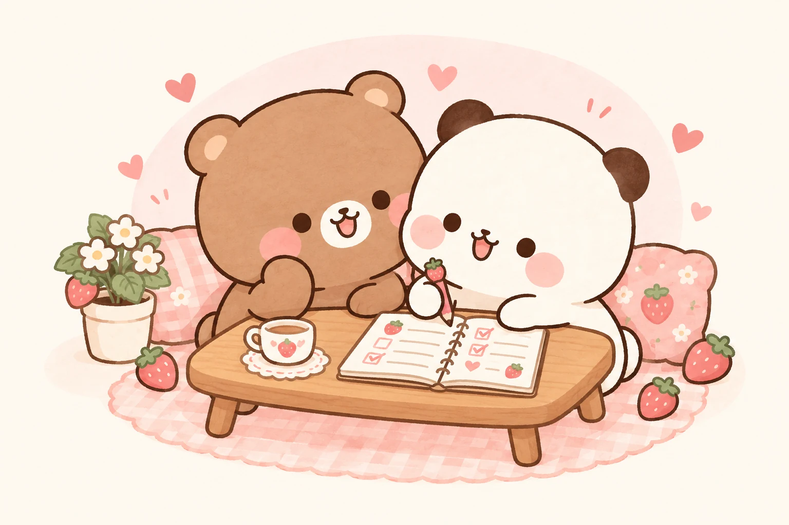

YOUR PERSONAL CHECKLIST
Small steps.
Real progress.Little plans.
Happy days.
A clear plan for every day. Make a list, find your focus,
and enjoy the feeling of getting things done.

A little progress, a lot of love. ♡0Days planned
0Total tasks
0Completed
FROM ROUGH NOTES TO A CLEAR PLAN
Your checklist,
just a conversation away.
Paste a plan or upload a file. AI organizes it into days and tasks.
✧Checklist assistant
CHECKMATEHi! Send me your checklist, even if it’s a little messy. I’ll arrange it as Day → Task → Checkbox.
Already have a draft? Tell me what to change, like “Move practice questions to Day 2.”
Clicking Convert sends your text and attached file content to OpenAI. Review the result before adding it.
READY WHEN YOU ARE
Your checklist preview
Existing days keep their tasks. Matching day numbers are combined, and exact duplicate tasks are skipped.